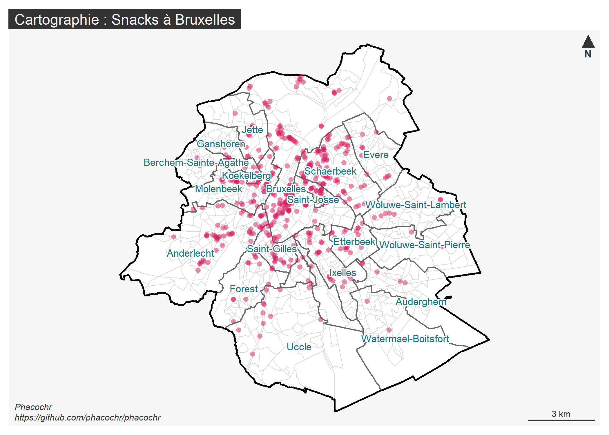

phacochr est un géocodeur pour la Belgique sous forme de package R. Son principe est de produire, à partir d’une base de données d’adresses, une série d’informations nécessaires pour l’analyse spatiale : les coordonnées X-Y mais également d’autres informations utiles comme le secteur statistique ou le quartier du monitoring pour Bruxelles. Le niveau de précision du géocodage est celui du bâtiment. Le package est très rapide pour géocoder de longues listes (la vitesse d’exécution se situe entre 0,4 et 0,8 secondes pour 100 adresses sur un ordinateur de puissance moyenne) et le taux de succès pour le géocodage est élevé (médiane de 97%). Voir la page Performances et fiabilité pour le détail des performances. Par ailleurs, le géocodage est réalisé entièrement en local, permettant une confidentialité maximale dans le cas d’adresses qui ne peuvent pas être envoyées sur des serveurs externes (permettant notamment un Géocodage anonymisé). phacochr constitue donc une alternative très performante face aux solutions existantes tout en reposant entièrement sur des données publiques et des procédures libres.
Le programme fonctionne avec les données publiques BeST Address compilées par BOSA à partir des données régionales Urbis (Région de Bruxelles-Capitale), CRAB (Région flamande) et ICAR (Région wallonne). La logique de phacochr est de réaliser une jointure inexacte entre la liste à géocoder et les données BeST Address grâce aux fonctions des packages R fuzzyjoin et stringdist. phacochr dispose de plusieurs options : il peut notamment réaliser des corrections orthographiques (en français et néérlandais) préalables à la détection des rues ou procéder au géocodage au numéro le plus proche - de préférence du même côté de la rue - si les coordonnées du numéro indiqué sont inconnues (par exemple si l’adresse n’existe plus). En cas de non disponibilité du numéro de la rue, le programme indique les coordonnées du numéro médian de la rue. phacochr est compatible avec les 3 langues nationales : il géocode des adresses écrites en français, néérlandais ou allemand.
Note de développement: Cette version de phacochr est encore une version de développement. Elle est néanmoins pleinement fonctionnelle et a passé l’épreuve de nombreux tests, au cours desquels des solutions ont été apportées aux problèmes posés par des structures de données diverses. La mise à disposition publique du package nous permettra de bénéficier de retours plus larges concernant des problèmes que nous n’aurions pas anticipés. Nous passerons phacochr en version 1.0 lorsque nous serons assurés que le package est suffisamment solide pour faire face à un grand nombre de situations. Néanmoins, dans un but de continuité d’utilisation, la logique d’utilisation de phacochr ne changera plus. Seuls quelques éléments seront encore certainement modifiés dans un avenir proche : il s’agit des noms des colonnes créées et des noms des arguments des fonctions, qui seront harmonisés et simplifiés, sans que cela impacte l’utilisation du programme.
Installation
Vous pouvez installer le package phacochr depuis GitHub. Pour cela, il vous faut d’abord installer et charger le package devtools :
# Installer devtools si celui-ci n'est pas installé et charger le package
install.packages("devtools")
library(devtools)
# Installer phacochr
devtools::install_github("phacochr/phacochr")Il est indispensable lors de la première utilisation d’installer les données nécessaires à son utilisation via la fonction phaco_setup_data(). Ces fichiers (+/- 265Mo) sont téléchargés et stockés de manière permanente dans un répertoire de travail sur l’ordinateur (dépendant du système d’exploitation et renseigné par la fonction lors de l’installation).
# Charger phacochr
library(phacochr)
# Installer les données nécessaires à phacochr
phaco_setup_data()Il est également possible pour l’utilisateur de mettre à jour lui-même les données BeST Address (actualisées de manière hebdomadaire par BOSA) vers les dernières données disponibles en ligne avec la fonction phaco_best_data_update(). Voir la page dédiée à la structure et la mise à jour des données pour plus de précisions.
Exemple de géocodage
Voici un exemple de géocodage à partir des données d’exemples snacks contenues dans phacochr :
head(snacks, 8)
#> # A tibble: 8 × 4
#> nom rue num code_postal
#> <chr> <chr> <chr> <chr>
#> 1 Snack Baraka Boulevard Maurice Lemonnier 32 1000
#> 2 Snack Les frères Rue Marie-Christine 121 1020
#> 3 Snack Adil Rue Marie-Christine 132 1020
#> 4 Efes Fritures Rue Marie-Christine 66 1020
#> 5 Snack 2001 Rue Marie-Christine 28 1020
#> 6 snack friterie Chérif Rue Stéphanie 165 1020
#> 7 Chez les grecs Rue Marie-Christine 44 1020
#> 8 Snack fransman Rue Fransman 39 1020Il s’agit des snacks à Bruxelles. Le géocodage se lance simplement avec la fonction phaco_geocode() appliquée au data.frame. Nous indiquons dans cet exemple 3 paramètres : les colonnes contenant la rue, le numéro de rue et le code postal, disponibles séparément dans la base de données. Il s’agit de la situation idéale, mais le programme est compatible avec d’autres configurations : celles-ci sont renseignée plus bas au point Format des données à géocoder. Mentionnons déjà que le numéro peut ne pas être renseigné ; phacochr trouve alors les coordonnées du numéro médian de la rue au code postal indiqué. La fonction dispose de plusieurs options, voir le dictionnaire des fonctions : https://phacochr.github.io/phacochr/reference/index.html.
result <- phaco_geocode(data_to_geocode = snacks,
colonne_num = "num",
colonne_rue = "rue",
colonne_code_postal = "code_postal")
result$data_geocoded [1:8,c("nom", "x_31370", "y_31370", "cd_sector")]
#> nom x_31370 y_31370 cd_sector
#> 1 Snack Baraka 148367 170405 21004A03-
#> 2 Snack Les frères 148897 173945 21004E70-
#> 3 Snack Adil 148904 173910 21004E70-
#> 4 Efes Fritures 149115 173779 21004E72-
#> 5 Snack 2001 149226 173709 21004E72-
#> 6 snack friterie Chérif 148605 174121 21004E70-
#> 7 Chez les grecs 149171 173744 21004E72-
#> 8 Snack fransman 148389 174242 21004E74-Un tableau synthétisant quelques résultats du géocodage est affiché à la fin de l’opération. Une version complète de ces résultats est accessible dans l’objet summary créé par phaco_geocode() :
knitr::kable(result$summary[2:nrow(result$summary), c("Region", "n", "Valid rue(%)", "Rue detect.(%valid)", "Approx.(n)", "Elarg.(n)", "Mid.(n)", "Geocode(%valid)", "Geocode(%tot)")],
caption = "Résumé du géocodage"
)| Region | n | Valid rue(%) | Rue detect.(%valid) | Approx.(n) | Elarg.(n) | Mid.(n) | Geocode(%valid) | Geocode(%tot) |
|---|---|---|---|---|---|---|---|---|
| Bruxelles | 484 | 100 | 100 | 2 | 0 | 0 | 100 | 100 |
| Total | 484 | 100 | 100 | 2 | 0 | 0 | 100 | 100 |
Résumé du géocodage
Le package dispose également d’une fonction de cartographie des adresses géocodées (reposant sur le packageR mapsf et des shapefiles intégrés aux données téléchargées). phaco_map_s() produit des cartes statiques à partir des données géocodées : il suffit de passer à la fonction l’objet data_geocoded_sf créé précédemment par phaco_geocode(). La fonction dessine alors les coordonnées des adresses sur une carte dont les frontières administratives sont également affichées. Si les adresses se restreignent à Bruxelles, la carte se limite automatiquement à la Région bruxelloise, comme c’est le cas pour cet exemple. Les options de la fonction sont également renseignées dans le dictionnaire des fonctions.
phaco_map_s(result$data_geocoded_sf,
title_carto = "Snacks à Bruxelles")
Format des données à géocoder
phacochr est compatible avec cinq formats concernant les données à géocoder. Dans chacun de ces formats, le programme procède à différentes corrections pour obtenir les informations nécessaires au géocodage. Les tableaux ci-dessous schématisent les différentes configurations envisageables, indiquent différents exemples à partir d’une même adresse (le 71 rue Belliard, 1040 Bruxelles) et mentionnent des notes pour que l’utilisateur comprenne ce que fait le programme.
1. Le numéro de rue, la rue et le code postal sont présents dans des colonnes séparées dans les données à géocoder : il s’agit du format idéal qui rencontrera le meilleur résultat. Dans ce cas, il faut renseigner les arguments colonne_num, colonne_rue et colonne_code_postal.
| rue | num | code_postal | Statut | Note |
|---|---|---|---|---|
| rue Belliard | 71 | 1040 | ✔️ | Situation idéale ! |
| rue Belliard | 71B | 1040 | ✔️ | S’il y a des caractères non numériques après le numéro de rue (lettres, caractères typographiques…), ceux-ci ne sont pas pris en compte. |
| rue Belliard | 71-73 | 1040 | ✔️ | Si le champ de numéro de rue compte plusieurs numéros, seul le premier est considéré. |
| rue Belliard | 71 | 1040 Bruxelles | ✔️ | Le nom de la commune (en lettres) peut être indiqué dans le champ code postal ➡ seul le nombre est considéré. L’ordre « code postal - commune » ou « commune - code postal » n’importe pas. |
| rue Belliard | 71 | Bruxelles 1040 | ✔️ | |
| rue Belliard | 71 | 1040 Etterbeek | ✔️ | Il n’y a pas d’incidence si le nom de la commune est erroné ➡ seul le code postal (nombre) est considéré. |
2. Le numéro de rue et la rue sont mélangés dans une colonne, et le code postal est seul dans une autre : ce format demande de renseigner les arguments colonne_num_rue et colonne_code_postal. Dans ce format, phacochr reconstitue à l’aide des expressions régulières (REGEX) la rue et le numéro dans des colonnes séparées. Cette procédure fonctionne très bien la plupart du temps. Il faut cependant respecter une règle importante : le numéro de rue doit être le premier numéro indiqué dans la colonne colonne_num_rue. Un numéro de boite (ou autre numéro) ne peut par exemple pas précéder le numéro de rue (cas cependant peu courant).
| code_postal | num_rue | Statut | Note |
|---|---|---|---|
| 1040 | 71, rue Belliard | ✔️ | Si la rue et le numéro sont intégrés dans le même champ, leur ordre n’a pas d’importance. La présence de signes de ponctuation (virgule, tiret…) ne pose pas de problèmes pour la détection de la rue => ils sont nettoyés avec la correction. |
| 1040 | rue Belliard, 71 | ✔️ | |
| 1040 | rue Belliard, 71 bte 5 | ✔️ | Le fait que le numéro de boite soit indiqué n’a pas d’incidence => il est nettoyé avant la détection de la rue. Il faut cependant respecter une règle importante : le numéro de rue doit être le premier numéro indiqué dans le champ. Le numéro de boite (ou autre numéro) ne peut par exemple pas précéder le numéro de rue (cas peu courant). |
| 1040 | bte 5 - rue Belliard, 71 | ❌ | Ici le numéro de boite vient avant le numéro de rue : phacochr interprète alors que le numéro de rue est 5 (alors que c’est 71). |
| 1040 | rue Belliard, n°71 | ✔️ | Le fait que « n° », « no », « n. » soit indiqué avant le numéro n’a pas d’incidence => il est nettoyé avant la détection de la rue. |
3. Le numéro de rue, la rue et le code postal sont intégrés dans la même colonne : dans ce format, il faut renseigner l’argument colonne_num_rue_code_postal. Le géocodeur reconstitue le numéro de rue, la rue (comme la situation précédente) mais aussi le code postal dans des colonnes séparées. Cette situation fonctionne également très bien, à condition d’observer cette règle : le numéro doit être le premier nombre et le code postal être en fin de champ (situations les plus courantes).
| num_rue_code_postal | Statut | Note |
|---|---|---|
| rue Belliard, 71 1040 | ✔️ | Dans le cas où la rue, le numéro et le code postal sont intégrés dans un même champ, il faut observer une règle fondamentale : le numéro doit être le premier nombre et le code postal être en fin de champ. |
| 71, rue Belliard 1040 | ✔️ | |
| rue Belliard 1040 n°71 | ❌ | Ici le numéro vient après le code postal : phacochr interprète alors que le numéro de rue est 1040 (alors que c’est 71). |
| 71, rue Belliard 1040 Bruxelles | ✔️ | Le nom de la commune (en lettres) peut être accolé au code postal (nombre) si ce dernier est en fin de champ. Si le nom de la commune vient après, il est nettoyé sans condition. S’il vient avant, il doit être écrit avec la bonne orthographe. |
| 71, rue Belliard Bruxelles 1040 | ✔️ | |
| 71, rue Belliard Bruxel 1040 | ❌ | Ici le nom de la commune est mal orthographié : “Bruxel” au lieu de “Bruxelles” : le code postal est détecté (car en fin de champ), mais phacochr ne supprime pas le nom “Bruxel” du champ de rue et trouve moins facilement (ou pas du tout) celle-ci. |
4. La rue et le code postal sont présents dans des colonnes séparées (sans numéro) : cette situation ressemble à la première, mais sans que le numéro soit disponible. phacochr géocode alors non pas à un niveau de précision du bâtiment, mais choisi comme coordonnées de résultat le bâtiment disposant du numéro médian de la rue au sein du même code postal (certaines rues traversant différents codes postaux). Ce format demande de renseigner les arguments colonne_rue et colonne_code_postal.
| rue | code_postal | Statut |
|---|---|---|
| rue Belliard | 1040 | ✔️ |
5. La rue et le code postal sont intégrés dans la même colonne (sans numéro) : le programme reconstitue la rue et le code postal dans des colonnes séparées (comme la situation 3). Dans ce cas, le code postal doit être en fin de champ. Lorsque ce n’est pas le cas, le programme ne fonctionne pas (situation peu courante). Ce format demande de renseigner l’argument colonne_rue_code_postal.
| rue_code_postal | Statut | Note |
|---|---|---|
| rue Belliard 1040 | ✔️ | Lorsqu’un champ contient la rue et le code postal, ce dernier doit être en fin de champ. Lorsque ce n’est pas le cas, le programme ne fonctionne pas (peu courant). |
| 1040 rue Belliard | ❌ | Ici le code postal est au début du champ : il n’est donc pas repéré. |
Résultats et vérification du géocodage
Notre fonction de géocodage phaco_geocode() consiste à réaliser une multitude d’opérations à la suite pour pouvoir associer la bonne adresse des données BeST (comprenant les coordonnées) à chaque adresse encodée, malgré la présence potentielle de fautes d’orthographe ou de coquilles. Nous renvoyons à la page Logique du géocodage pour mieux comprendre les opérations effectuées, et donc savoir déterminer les meilleurs réglages en fonction de la structure spécifique des données à géocoder.
A l’issue du processus, le géocodage produit un dataframe identique à celui qui a été introduit en entrée mais incorporant désormais de nombreuses informations spatiales. Les principales sont les coordonnées X-Y qui se trouvent dans les colonnes x_31370 et y_31370 au format Lambert 72. Outre ces coordonnées, on trouve notamment (la liste complète est disponible au point Colonnes créées en fin de page) :
- Les secteurs statistiques (colonne
cd_sectoret leurs noms en NL et FRtx_sector_descr_nlettx_sector_descr_fr) ; - Les quartiers monitoring pour Bruxelles (colonne
MDRCet leurs noms en NL et FRNAME_DUTetNAME_FRE) ; - Les codes INS des communes, arrondissements, provinces et regions (ainsi que leurs noms en FR et NL) dans des colonnes qui suivent les appelations classiques de Statbel ;
- Toute une série d’indicateurs sur la qualité de la localisation (voir plus bas).
Le résultat du géocodage est une liste (au sens de R). Il comprend trois objets :
-
data_geocoded: la base de données originale à laquelle sont ajoutées les informations précitées ; -
data_geocoded_sf: un objetsfproduit à partir des adresses pour lesquelles des coordonnées ont effectivement été trouvées (le nombre de lignes reprises dans l’objet dépend donc du taux de géocodage). Cet objet est exportable en .gpkg (ou autre format vectoriel) à l’aide de la fonction st_write ou peut directement être cartographié avec la fonctionphaco_map_s; -
summary: un tableau avec quelques statistiques synthétiques indiquant la performance du géocodage.
Il peut possiblement y avoir de “faux positifs” lors du géocodage, c’est-à-dire que phacochr peut parfois associer une mauvaise rue à l’adresse encodée si celle-ci est trop mal orthographiée. Ces erreurs sont normalement peu nombreuses avec les réglages par défaut : voir la page Performances et fiabilité. Pour avoir une idée de la qualité des résultats, il est malgré tout conseillé de vérifier plusieurs éléments (la synthèse des indicateurs de qualité du géocodage est disponible au point Colonnes créées ci-dessous) :
- Vérifier globalement que les corrections orthographiques ont bien fonctionné (la colonne
rue_recodedcomprend la rue nettoyée et corrigée, etrecodeindique les types de corrections réalisées) ; - Comparer les rues détectées par
phacochr(la colonnestreet_FINAL_detected) avec les rues d’origine pour les erreurs les plus élevées dans la jointure inexacte (la colonnedist_fuzzyindique le nombre d’erreurs nécessaires pour faire la jointure avec les données BeST.0signifie que le matching est exact) ; - Procéder à la même comparaison pour les rues dont la détection a nécessité un élargissement aux communes adjacentes (colonne
type_geocoding == elargissement_adj). Une rue au même nom aurait pu être trouvée dans une commune voisine ; - Vérifier dans le tableau des résultats le nombre d’adresses qui ont nécessité une localisation géographique à un autre numéro si celui renseigné n’a pas été trouvé. Examinez plus spécifiquement les adresses qui ont demandé les approximations les plus amples (colonne
approx_num) ; - Vérifier dans le tableau des résultats le nombre d’adresses qui ont demandé une localisation au numéro médian de la rue au code postal encodé. Examinez par précaution les adresses qui ont demandé une localisation à la rue (colonne
type_geocoding == mid_street).
Colonnes créées
Le principe de phacochr est d’adjoindre une série d’informations à la liste d’adresses originale : il s’agit bien entendu d’informations spatiales (coordonnées X-Y et des informations administratives sur les entités spatiales) mais également d’indices sur la qualité du géocodage. En voici une liste exhaustive et commentée:
| Colonne créée | Signification |
|---|---|
| ID_address | Un identifiant unique par ligne du tableau original créé pour le bon fonctionnement de phacochr. Le nombre maximal de cet identifiant est égal au nombre de lignes du tableau. |
| rue_recoded | La rue extraite, nettoyée et corrigée à partir du champ original contenant la rue. C’est par le biais de cette colonne qu’est réalisé le matching inexact pour la rue. |
| recode | Indique les diffétents nettoyages / corrections réalisés pour obtenir rue_recoded. |
| street_FINAL_detected | La rue détectée par phacochr issue des données BeST. NA si aucune rue n’a été détectée. |
| num_rue_clean | Le numéro de rue nettoyé (un nombre unique est extrait, sans lettres ou caractères typographiques). |
| code_postal_to_geocode | Le code postal nettoyé (sans nom de commune s’il était présent dans le champ original). Si la rue est trouvée dans une commune adjacente, le code postal où se trouve cette rue remplace le code postal original dans cette colonne. |
| street_id_phaco | L’identifiant numérique des rues BeST propre à phacochr. Cet identifiant est créé lors du géocodage. Ce champ n’est pas utile pour l’utilisateur. |
| langue_FINAL_detected | La langue détectée d’écriture de la rue (FR, NL ou DE). NA si aucune rue n’a été détectée. |
| nom_propre_abv | Une valeur 1 indique que phacochr a détecté un nom propre abrégé dans le champ de rue original (NA dans le cas contraire). Cette information est produite durant le processus de détection des rues dans le but de maximiser la détection des rues dont les noms propres sont orthographiés avec des abréviations. |
| mid_num | Le numéro médian de la rue au code postal considéré. |
| mid_x_31370 | La coordonnée X (format: Lambert 72) du numéro médian de la rue au code postal considéré. |
| mid_y_31370 | La coordonnée Y (format: Lambert 72) du numéro médian de la rue au code postal considéré. |
| mid_cd_sector | Le secteur statistique du numéro médian de la rue au code postal considéré. |
| dist_fuzzy | Indique le nombre d’erreurs qui ont été nécessaires pour faire la jointure avec les données de rue BeST. La valeur maximale est égal à error_max (4 par défaut); 0 signifie que le matching est exact. NA si aucune rue n’a été détectée. |
| type_geocoding | Indique la nature du géocodage. Les rues dont la détection a nécessité un élargissement aux communes adjacentes sont indiquées par la valeur elargissement_adj. Les adresses qui ont demandé une localisation au numéro médian de la rue au code postal indiqué sont signalées par la valeur mid_street. Les autres cas présentent une valeur vide. |
| house_number_sans_lettre | Le numéro qui a été géolocalisé dans les données BeST. |
| x_31370 | La coordonnée X (format: Lambert 72) du numéro indiqué. Si la localisation n’a pu se faire qu’au numéro médian de la rue (type_geocoding == mid_street), la valeur est la même que mid_x_31370. NA si aucune coordonnée n’a été trouvée. |
| y_31370 | La coordonnée Y (format: Lambert 72) du numéro indiqué. Si la localisation n’a pu se faire qu’au numéro médian de la rue (type_geocoding == mid_street), la valeur est la même que mid_y_31370. NA si aucune coordonnée n’a été trouvée. |
| cd_sector | Le secteur statistique. Si la localisation n’a pu se faire qu’au numéro médian de la rue (type_geocoding == mid_street), la valeur est la même que mid_cd_sector. NA si aucune coordonnée n’a été trouvée. |
| approx_num | Indique si la localisation n’a pas pu se faire au numéro indiqué. La valeur indique la distance entre le numéro “réel” indiqué et celui effectivement localisé. 0 si la localisation est exacte au numéro. NA si aucune coordonnée n’a été trouvée au numéro exact ou approximé (elles ont cependant pu l’être pour le milieu de la rue). |
| tx_sector_descr_nl | Le nom du secteur statistique en NL (Statbel). |
| tx_sector_descr_fr | Le nom du secteur statistique en FR (Statbel). |
| cd_sub_munty | Code Refnis des subdivisions des communes (Statbel). |
| tx_sub_munty_nl | Nom des subdivisions des communes en NL (Statbel). |
| tx_sub_munty_fr | Nom des subdivisions des communes en FR (Statbel). |
| cd_munty_refnis | Code Refnis des communes (Statbel). |
| tx_munty_descr_nl | Nom des subdivisions des communes en NL (Statbel). |
| tx_munty_descr_fr | Nom des subdivisions des communes en FR (Statbel). |
| cd_dstr_refnis | Code Refnis de l’arrondissement (Statbel). |
| tx_adm_dstr_descr_nl | Nom de l’arrondissement en NL (Statbel). |
| tx_adm_dstr_descr_fr | Nom de l’arrondissement en FR (Statbel). |
| cd_prov_refnis | Code Refnis de la province (Statbel). |
| tx_prov_descr_nl | Nom de la province en NL (Statbel). |
| tx_prov_descr_fr | Nom de la province en FR (Statbel). |
| cd_rgn_refnis | Code Refnis de la région (Statbel). |
| tx_rgn_descr_nl | Nom de la région en NL (Statbel). |
| tx_rgn_descr_fr | Nom de la région en FR (Statbel). |
| MDRC | Code du quartier monitoring pour Bruxelles (Urbis). |
| NAME_FRE | Nom du quartier monitoring pour Bruxelles en FR (Urbis). |
| NAME_DUT | Nom du quartier monitoring pour Bruxelles en NL (Urbis). |
| phaco_anonymous | Colonne créée dans le cas où l’option d’anonymisation des résultats est enclenchée. 1 signifie que le géocodage a été réalisé (même si le numéro a été approximé ou que l’adresse a été située au milieu de la rue). NA si aucune coordonnée n’a été trouvée. Voir la page Géocodage anonymisé pour plus de précisions. |
| cd_sector_x_31370 | La coordonnée X (format: Lambert 72) du centroïde du secteur statistique où se trouve l’adresse. NA si aucune coordonnée n’a été trouvée. |
| cd_sector_y_31370 | La coordonnée Y (format: Lambert 72) du centroïde du secteur statistique où se trouve l’adresse. NA si aucune coordonnée n’a été trouvée. |
Autres géocodeurs libres
- Nominatim: le géocodeur de OpenStreetMap.
- BHiGIS – Brussels Historical Geographical Information System: un géocodeur développé par l’IGEAT permettant de géocoder des données anciennes à Bruxelles.
Contact
Si vous rencontrez un bug à l’utilisation, n’hésitez pas à nous en faire part : nous désirons améliorer le programme et sommes intéressés d’avoir le maximum de retours. Les deux auteurs de ce package sont chercheurs en sociologie et en géographie ; nous ne sommes pas programmeurs de profession, et sommes donc également preneurs de toute proposition d’amélioration ! Rendez-vous dans la section ‘issues’ sur notre Github.